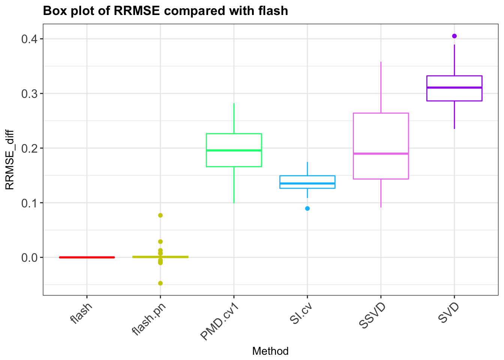

Last updated: 2018-02-11
Code version: d53227e
This file is just generate the RRMSE plot of rank 3 data.
# the example in our paper using sigma = 2
DataMaker = function(sigma = 2){
N = 150
P = 240
K = 3
L_true = array(0,dim = c(N,K))
F_true = array(0,dim = c(P,K))
F_true[1:80,1] = rnorm(80,0,0.5)
F_true[81:160,2] = rnorm(80,0,1)
F_true[161:240,3] = rnorm(80,0,2)
L_true[1:10,1] = rnorm(10,0,2)
L_true[11:60,2] = rnorm(50,0,1)
L_true[61:150,3] = rnorm(90,0,0.5)
G = L_true %*% t(F_true)
# generate Y
E = matrix(rnorm(N*P,0,sigma),nrow=N)
Y = L_true %*% t(F_true) + E
return(list(Y = Y, L_true = L_true, F_true = F_true, E = E))
}
CVPMD_softImpute=function(Y,c_s,K,fold = 10, method = "PMD"){
N = dim(Y)[1]
P = dim(Y)[2]
colindex = matrix(sample(P,P),ncol = fold)
rowindex = matrix(sample(N,N),ncol = fold)
missing= array(0,dim = c(fold,N,P))
foldindex = array(0,dim = c(fold,fold,2))
for(i in 1:fold){
for(j in 1:fold){
foldindex[i,j,1] = i
foldindex[i,j,2] = (i+j) %% fold
}
}
foldindex[which(foldindex == 0)] = fold
for(i in 1:fold){
missing[i, , ] = Y
for(j in 1:fold){
missing[i,rowindex[,foldindex[j,i,1]],colindex[,foldindex[j,i,2]]] = NA
}
missing[i,,which(colSums(missing[i,,],na.rm = T) ==0)] = Y[,which(colSums(missing[i,,],na.rm = T) ==0)]
}
# c_s is the candicate of shrinkage parameter
n_s = length(c_s)
# rmse for each grids
CVRMSE = rep(0,n_s)
minrmse = Inf
opt_s = 0
# for each candidate, we run it N_sim times
for(t_s in 1:n_s){
# for each grid
# each time we set the rmse to zeros
rmse = rep(0,fold)
for(i in 1:fold){
if(method == "PMD"){
res_log = capture.output({out = PMD(missing[i,,], sumabs = c_s[t_s], sumabsv = NULL, sumabsu = NULL,K = K)})
}else{
out = softImpute(missing[i,,], rank.max = K,lambda = c_s[t_s])
}
if(length(out$d)==1){
misshat = (out$d) * out$u %*% t(out$v)
}else{
misshat = out$u %*% diag(out$d) %*% t(out$v)
}
for(j in 1:fold){
# for each fold j
rmse[i] = rmse[i] + sum((Y[rowindex[,foldindex[j,i,1]],colindex[,foldindex[j,i,2]]] -
misshat[rowindex[,foldindex[j,i,1]],colindex[,foldindex[j,i,2]]])^2,na.rm = TRUE)
}
} #get the result for one run
CVRMSE[t_s] = CVRMSE[t_s] + sqrt(sum(rmse)/(N*P))
if(CVRMSE[t_s] < minrmse){
minrmse = CVRMSE[t_s]
opt_s = c_s[t_s]
}
}
return(list(opt_s = opt_s, output = CVRMSE))
}
PMA.wrapper = function(Y_data, ngrids = 10, K=3, fold = 10){
library(PMA)
Y = Y_data$Y
L_true = Y_data$L_true
F_true = Y_data$F_true
E = Y_data$E
N = dim(Y)[1]
P = dim(Y)[2]
c_s = seq(0.1,0.9,len=ngrids)
cvout = CVPMD_softImpute(Y,c_s,K ,fold , method = "PMD")
res_log = capture.output({out = PMD(Y,sumabsu = NULL, sumabsv = NULL, sumabs = cvout$opt_s ,K = K)})
Y_hat = out$u %*% diag(out$d) %*% t(out$v)
RMSE = sqrt(mean(( Y - Y_hat - E )^2 ))/sqrt(mean(( Y - E )^2 ))
return(RMSE)
}
softImpute.wrapper = function(Y_data, ngrids = 10, K = 3, fold = 10){
library(softImpute)
Y = Y_data$Y
L_true = Y_data$L_true
F_true = Y_data$F_true
E = Y_data$E
N = dim(Y)[1]
P = dim(Y)[2]
c_s = seq(0,100,len=ngrids)
cvout = CVPMD_softImpute(Y,c_s,K ,fold , method = "softImpute")
out = softImpute(Y, rank.max = K,lambda = cvout$opt_s)
if(length(out$d)==1){
Y_hat = (out$d) * out$u %*% t(out$v)
}else{
Y_hat = out$u %*% diag(out$d) %*% t(out$v)
}
RMSE = sqrt(mean(( Y - Y_hat - E )^2 ))/sqrt(mean(( Y - E )^2 ))
return(RMSE)
}
SVD.wrapper = function(Y_data,K = 3){
Y = Y_data$Y
L_true = Y_data$L_true
F_true = Y_data$F_true
E = Y_data$E
N = dim(Y)[1]
P = dim(Y)[2]
gsvd = svd(Y,nu = 3,nv = 3)
Y_hat = (gsvd$u[,1:K] %*% diag(gsvd$d[1:K]) %*% t(gsvd$v[,1:K]))
RMSE = sqrt(mean(( Y - Y_hat - E )^2 ))/sqrt(mean(( Y - E )^2 ))
return(RMSE)
}
SSVD.wrapper = function(Y_data,K = 3){
library(ssvd)
Y = Y_data$Y
L_true = Y_data$L_true
F_true = Y_data$F_true
E = Y_data$E
N = dim(Y)[1]
P = dim(Y)[2]
gssvd = ssvd::ssvd(Y,method = "method",r = K)
Y_hat = (gssvd$u %*% diag(gssvd$d) %*% t(gssvd$v))
RMSE = sqrt(mean(( Y - Y_hat - E )^2 ))/sqrt(mean(( Y - E )^2 ))
return(RMSE)
}
PN.wrapper = function(Y_data,K = 3){
Y = Y_data$Y
L_true = Y_data$L_true
F_true = Y_data$F_true
E = Y_data$E
N = dim(Y)[1]
P = dim(Y)[2]
library(ebnm)
library(flashr)
data = flashr::flash_set_data(Y)
g_flash = flashr::flash_add_greedy(data,verbose=F,var_type = "constant",ebnm_fn = ebnm_pn, K = K)
Y_hat = g_flash$EL %*% t(g_flash$EF)
RMSE = sqrt(mean(( Y - Y_hat - E )^2 ))/sqrt(mean(( Y - E )^2 ))
return(RMSE)
}
flash.wrapper = function(Y_data, K = 3){
# missindex is a matirx with 3 column here: i j x
# Y has miss value already
Y = Y_data$Y
L_true = Y_data$L_true
F_true = Y_data$F_true
E = Y_data$E
N = dim(Y)[1]
P = dim(Y)[2]
data = flashr::flash_set_data(Y)
g_flash = flashr::flash_add_greedy(data,verbose=F,var_type = "constant", K = K)
Y_hat = g_flash$EL %*% t(g_flash$EF)
RMSE = sqrt(mean(( Y - Y_hat - E )^2 ))/sqrt(mean(( Y - E )^2 ))
return(RMSE)
}creat run.R file as follows:
library(PMA)
library(flashr)
library(ssvd)
library(softImpute)
Y_data = DataMaker()
RMSE = rep(NA,6)
RMSE[1] = PMA.wrapper(Y_data)
RMSE[2] = flash.wrapper(Y_data)
RMSE[3] = PN.wrapper(Y_data)
RMSE[4] = SVD.wrapper(Y_data)
RMSE[5] = SSVD.wrapper(Y_data)
RMSE[6] = softImpute.wrapper(Y_data)
saveRDS(RMSE, "./output.rds")#!/bin/bash
#SBATCH --job-name=arrayJob
#SBATCH --output=./outlog/arrayJob_%A_%a.out
#SBATCH --error=./outlog/arrayJob_%A_%a.err
#SBATCH --array=1-100
#SBATCH --time=02:00:00
#SBATCH --partition=broadwl
#SBATCH --ntasks=1
#SBATCH --mem-per-cpu=2000
######################
# Begin work section #
######################
module load R
# Print this sub-job's task ID
mkdir test${SLURM_ARRAY_TASK_ID}
cd test${SLURM_ARRAY_TASK_ID}
Rscript --verbose ../run.Rname the above file as Jobs.sbatch
sbatch Jobs.sbatchT = 100
results = matrix(NA,ncol = 6, nrow = T)
for(i in 1:T){
test_folder = paste("test", i, sep = "")
out_file = "output.rds"
file_name = file.path(test_folder,out_file)
results[i,] = try(readRDS(file_name))
}
saveRDS(results,"./RES_rrmse.rds")plot_res = function(output,title = "data",legend_position = "none", methods_name,myColors){
rmse = as.vector(output)
N = dim(output)[1]
methods = rep(methods_name, each = N)
df = data.frame(RRMSE_diff = rmse, Method = methods )
p<-ggplot(df, aes(x=Method, y=RRMSE_diff, color=Method)) +
geom_boxplot()+
# geom_violin()+
ggtitle(title) + theme_bw()+ scale_color_manual(values=myColors)+
theme(legend.position= legend_position, legend.text=element_text(size=10),
plot.title = element_text(size = 12.9, face = "bold"),
axis.text.y = element_text(size =12),
axis.text.x = element_text(size =12,angle = 45, hjust = 1))
p
}
library(ggplot2)sparse_res = readRDS("../data/output/simulation/rankthree/boxplot.rds")
colnames(sparse_res) = c("PMD.cv1","flash","flash.pn","SVD","SSVD","SI.cv")
sparse_diff = sparse_res - sparse_res[,2]
# p3 = plot_res(sparse_diff,"Difference from FLASH result (0% zeros)")
methods_name = colnames(sparse_diff)
fill_color = c("red","yellow3", "springgreen", "springgreen3", "cyan","cyan3", "deepskyblue","violet","purple")
p3mse = plot_res(sparse_diff,title = "Box plot of RRMSE compared with flash",methods_name = methods_name,
myColors = fill_color[c(1,2,3,7,8,9)])p3mse
sessionInfo()R version 3.3.0 (2016-05-03)
Platform: x86_64-apple-darwin13.4.0 (64-bit)
Running under: OS X 10.13.3 (unknown)
locale:
[1] en_US.UTF-8/en_US.UTF-8/en_US.UTF-8/C/en_US.UTF-8/en_US.UTF-8
attached base packages:
[1] stats graphics grDevices utils datasets methods base
other attached packages:
[1] scales_0.4.1 MASS_7.3-47 reshape2_1.4.3 flashr_0.4-6
[5] workflowr_0.4.0 rmarkdown_1.6 ggplot2_2.2.1 R.matlab_3.6.1
[9] softImpute_1.4 Matrix_1.2-11 PMA_1.0.9 impute_1.48.0
[13] plyr_1.8.4 ssvd_1.0
loaded via a namespace (and not attached):
[1] Rcpp_0.12.14 git2r_0.19.0 R.methodsS3_1.7.1
[4] R.utils_2.5.0 iterators_1.0.9 tools_3.3.0
[7] digest_0.6.13 memoise_1.1.0 evaluate_0.10.1
[10] tibble_1.3.4 gtable_0.2.0 lattice_0.20-35
[13] rlang_0.1.6 foreach_1.4.4 rstudioapi_0.6
[16] curl_2.8.1 yaml_2.1.16 parallel_3.3.0
[19] gridExtra_2.3 httr_1.3.0 withr_2.1.1
[22] stringr_1.2.0 knitr_1.18 devtools_1.13.3
[25] rprojroot_1.2 grid_3.3.0 R6_2.2.2
[28] flashr2_0.4-0 ashr_2.2-3 magrittr_1.5
[31] backports_1.1.2 codetools_0.2-15 htmltools_0.3.6
[34] colorspace_1.3-2 labeling_0.3 stringi_1.1.6
[37] lazyeval_0.2.0 doParallel_1.0.11 munsell_0.4.3
[40] pscl_1.5.2 truncnorm_1.0-7 SQUAREM_2017.10-1
[43] R.oo_1.21.0 This R Markdown site was created with workflowr